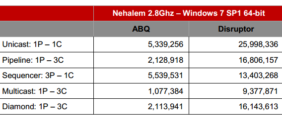
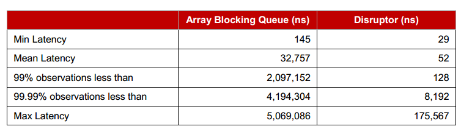
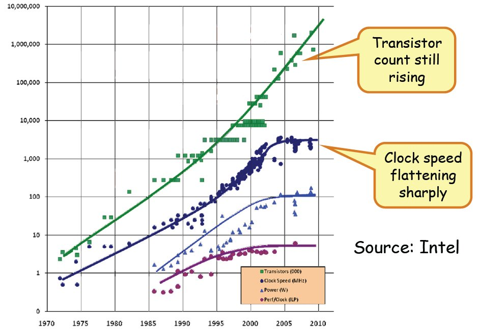
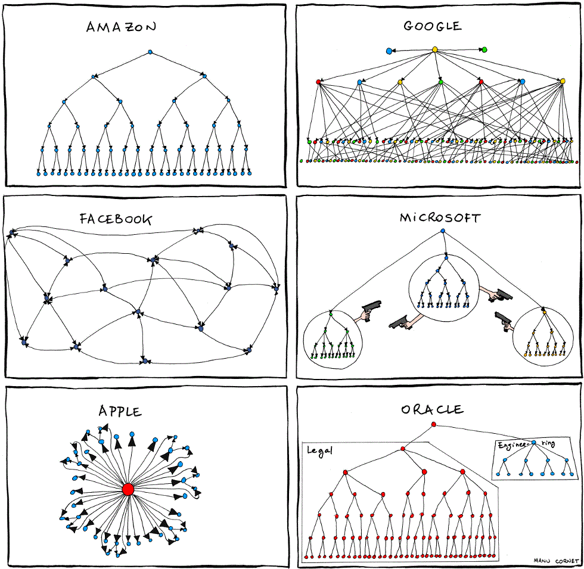
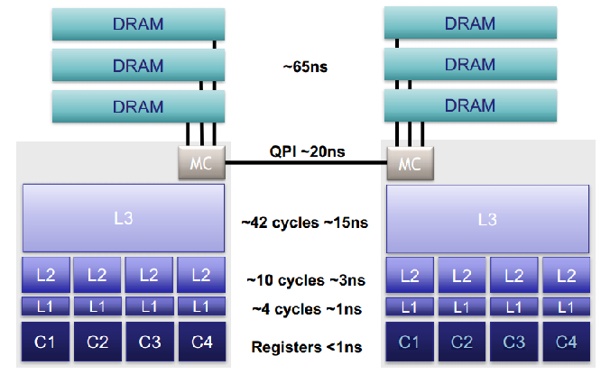
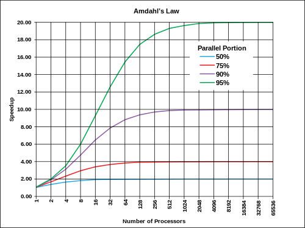
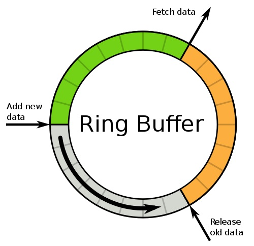
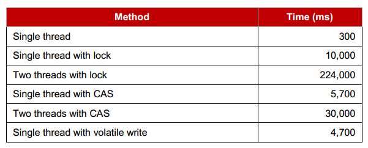
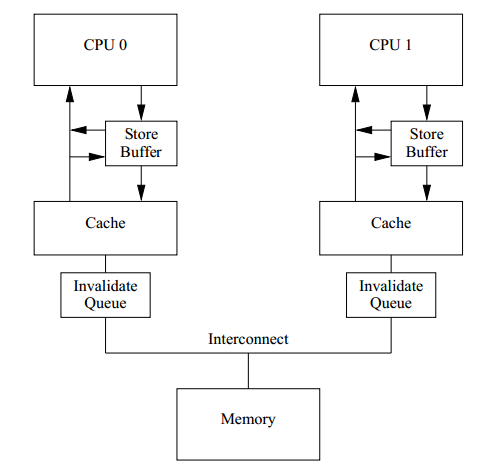

LMAX disruptor is a high performance alternative to bounded queues for exchanging data between concurrent threads. Because of its high performance, disruptor is first applied in financial and messaging systems.
Disruptor throughput compared to queue

Latency compared to queue

Disruptor is so fast because it shows mechanical sympathy to modern CPU designs. The best way to explain technology is by metaphor, as is said:
Technology is similar, thought behind is the key.
You are the boss of a fast food restaurant, what are you supposed to do to serve more customers? You hire a waitress with fast hands.
Waitress with fast hands
However the speed of waitress is limited, so you hire another waitress. Now the two process requests in parallel, and total throughput is doubled.
Hire two waitresses
Parallel programming is just the same. with a high speed CPU, programs can run fast, result in high throughput and low latency. However CPU speed is limited to several GHZ, so more CPU cores are introduced, and programs need to run in parallel.
CPU speed is limited, but the core numbers obey Moore's law

Your restaurant grows rapidly, so you must extend your business to more cities, even more counties. As the boss you can not manage all of your employee by yourself, instead you hire managers.
an organization is composed of multiple stages

Modern CPU has multiple level caches, and the architecture is similar to an organization.
CPU cache contains multiple stages

In real world there is all kind of inefficiency, one department may depend on another.
In a program, how can we optimize process in such a parallel and staged environment? Here comes the Amdahl's law.
The speedup of a program using multiple processors in parallel computing is limited by the time needed for the sequential fraction of the program. If %5 of the program cannot compute in parallel, the speedup can only reach 20 times no matter how many processors there are.
Amdahl's law

To remove inefficiency, just find the bottleneck that can not run in parallel.
manager collect status of employees, but they do not send to you one by one, instead they wait until all the status is collected, and send to you in a batch.
Similarly, CPU caches is split to cache lines, since access main memory is expensive, the cache batch read data from main memory. Cache miss result in main memory access.
Disruptor use ring buffer to place objects pad together in memory so as to avoid false sharing and cache miss.
Ring buffer

staff manager and product manager both collect information from employees. they can exchange status of employees directly since their offices are close to each other.
synchronization for shared resource is expensive.
lock penalty

Disruptor use lock free memory barrier to synchronize sequence of ring buffer. Two cores in CPU talk to each other directly via memory barrier to exchange resource state.
memory barrier
